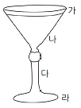
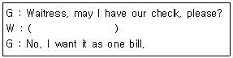
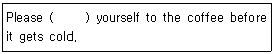
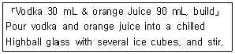

조주기능사 (2015-01-25 기출문제)
1과목: 주류학개론
1. Agave의 수액을 발효한 후 증류하여 만든 술은?
- Tequila
- Aquavit
- Grappa
- Rum
(정답률: 88%)

2. 우리나라주세법 상 탁주와 약주의 알코올도수 표기 시 허용 오차는?
- ± 0.1%
- ± 0.5%
- ± 1.0%
- ± 1.5%
(정답률: 58%)
3. 세계 3대 홍차에 해당되지 않는 것은?
- 아삼(Assam)
- 우바(Uva)
- 기문(Keemun)
- 다즐링(Darjeeling)
(정답률: 60%)
4. 다음 중 프랑스의 주요 와인 산지가 아닌 곳은?
- 보르도(Bordeaux)
- 토스카나(Toscana)
- 루아르(Loire)
- 론(Rhone)
(정답률: 65%)
5. 오렌지를 주원료로 만든 술이 아닌 것은?
- Triple Sec
- Tequila
- Cointreau
- Grand Marnier
(정답률: 88%)
6. 동일 회사에서 생산된 코냑(Cognac)중 숙성 년도가 가장 오래된 것은?
- V.S.O.P
- Napoleon
- Extra Old
- 3 star
(정답률: 86%)
7. 음료에 대한 설명이 틀린 것은?
- 칼린스믹서(Collins mixer)는 레몬주스와 설탕을 주원료로 만든 착향 탄산음료이다.
- 토닉워터(Tonic water)는 키니네(quinine)를 함유하고 있다.
- 코코아(cocoa)는 코코넛(coconut)열매를 가공하여 가루로 만든 것이다.
- 콜라(coke)는 콜라닌과 카페인을 함유하고 있다.
(정답률: 79%)
8. 네덜란드 맥주가 아닌 것은?
- 그롤쉬
- 하이네켄
- 암스텔
- 디벨스
(정답률: 44%)
9. 스카치 위스키(Scotch Whisky)가 아닌 것은?
- 시바스 리갈(Chivas Regal)
- 글렌피딕(Glenfiddich)
- 존 제임슨(John Jameson)
- 커티 샥(Cutty Sark)
(정답률: 69%)
10. 모카(Mocha)와 관련한 설명 중 틀린 것은?
- 예멘의 항구 이름
- 에티오피아와 예멘에서 생산되는 커피
- 초콜릿이 들어간 음료에 붙이는 이름
- 자메이카산 블루마운틴 커피
(정답률: 69%)
11. 4월 20일(곡우) 이전에 수확하여 제조한 차로 찻잎이 작으며 연하고 맛이 부드러우며 감칠맛과 향이 뛰어난 한국의 녹차는?
- 작설차
- 우전차
- 곡우차
- 입하차
(정답률: 54%)
12. 다음 중 양조주가 아닌 것은?
- 맥주(beer)
- 와인(wine)
- 브랜디(brandy)
- 풀케(pulque)
(정답률: 77%)
13. Scotch whisky에 꿀(Honey)을 넣어 만든 혼성주는?
- Cherry Heering
- Cointreau
- Galliano
- Drambuie
(정답률: 77%)
14. 발포성 포도주와 관계가 없는 것은?
- 뱅 무스(Vin Mousseux)
- 베르무트(Vermouth)
- 동 페리뇽(Dom Perignon)
- 샴페인(Champagne)
(정답률: 76%)
15. 맥주용 보리의 조건이 아닌 것은?
- 껍질이 얇아야 한다.
- 담황색을 띄고 윤택이 있어야 한다.
- 전분 함유량이 적어야 한다.
- 수분 함유량 13% 이하로 잘 건조되어야 한다.
(정답률: 83%)
16. 버번위스키 1pint의 용량으로 맨해튼 칵테일 몇 잔을 만들어 낼 수 있는가?
- 약 5잔
- 약 10잔
- 약 15잔
- 약 20잔
(정답률: 57%)
17. Still wine을 바르게 설명한 것은?
- 발포성 와인
- 식사 전 와인
- 비발포성 와인
- 식사 후 와인
(정답률: 73%)
18. 발효방법에 따른 차의 분류가 잘못 연결된 것은?
- 비발효차 – 녹차
- 반발효차 – 우롱차
- 발효차 – 말차
- 후발효차 – 흑차
(정답률: 56%)
19. 전통주와 관련한 설명으로 옳지 않은 것은?
- 모주 – 막걸리에 한약재를 넣고 끓인 술
- 감주 – 누룩으로 빚은 술의 일종으로 술과 식혜의 중간
- 죽력고 – 청죽을 쪼개어 불에 구워 스며 나오는 진액인 죽력과 물을 소주에 넣고 중탕한 술
- 합주 – 물대신 좋은 술로 빚어 감미를 더한 주도가 낮은 술
(정답률: 61%)
20. 다음 중 Cognac지방의 Brandy가아닌 것은?
- Remy Martin
- Hennessy
- Chabot
- Hine
(정답률: 35%)
21. 독일와인에 대한 설명 중 틀린 것은?
- 아이스바인(Eiswein)은 대표적인 레드와인이다.
- Prädikatswein 등급은 포도의 수확상태에 따라서 여섯 등급으로 나눈다.
- 레드와인보다 화이트와인의 제조가 월등히 많다.
- 아우스레제(Auslese)는 완전히 익은 포도를 선별해서 만든다.
(정답률: 43%)
22. 양조주의 설명으로 옳은 것은?
- 단식증류기를 사용한다.
- 알코올 함량이 높고 저장기간이 길다.
- 전분이나 과당을 발효시켜 제조한다.
- 주정에 초근목피를 첨가하여 만든다.
(정답률: 68%)
23. 다음 중 지역명과 대표적인 포도 품종의 연결이 맞는 것은?
- 샴페인 – 세미용
- 부르고뉴(White) – 쇼비뇽 블랑
- 보르도(Red) – 피노 누아
- 샤또뇌프 뒤 빠쁘 – 그르나슈
(정답률: 43%)
24. 혼성주 특유의 향과 맛을 이루는 주재료로 가장 거리가 먼 것은?
- 과일
- 꽃
- 천연향료
- 곡물
(정답률: 71%)
25. 오렌지 껍질을 주원료로 만든 혼성주는?
- Anisette
- Campari
- Triple Sec
- Underberg
(정답률: 86%)
26. 술 자체의 맛을 의미하는 것으로 '단맛'이라는 의미의 프랑스어는?
- Trocken
- Blanc
- Cru
- Doux
(정답률: 73%)
27. 증류주에 대한 설명으로 옳은 것은?
- 과실이나 곡류 등을 발효시킨 후 열을 가하여 알코올을 분리해서 만든다.
- 과실의 향료를 혼합하여 향기와 감미를 첨가한다.
- 종류로는 맥주, 와인, 약주 등이 있다.
- 탄산성 음료를 의미한다.
(정답률: 83%)
28. 다음 중 발명자가 알려져 있는 것은?
- Vodka
- Calvados
- Gin
- Irish Whisky
(정답률: 69%)
29. 프랑스 수도원에서 약초로 만든 리큐르로 '리큐르의 여왕'이라 불리는 것은?
- 압생트(Absinthe)
- 베네딕틴 디오엠(Benedictine D.O.M)
- 두보네(Dubonnet)
- 샤르트뢰즈(Chartreuse)
(정답률: 84%)
30. 문배주에 대한 설명으로 틀린 것은?
- 술의 향기가 문배나무의 과실에서 풍기는 향기와 같다하여 붙여진 이름이다.
- 원료는 밀, 좁쌀, 수수를 이용하여 만든 발효주이다.
- 평안도 지방에서 전수되었다.
- 누룩의 주원료는 밀이다.
(정답률: 43%)
2과목: 주장관리개론
31. 다음 중 비터(Bitters)의 설명으로 옳은 것은?
- 쓴맛이 강한 혼성주로 칵테일에는 소량을 첨가하여 향료 또는 고미제로 사용
- 야생체리로 착색한 무색의 투명한 술
- 박하냄새가 나는 녹색의 색소
- 초콜릿 맛이 나는 시럽
(정답률: 90%)
32. 고객이 바에서 진 베이스의 칵테일을 주문할 경우 Call Brand의 의미는?
- 고객이 직접 요청하는 특정브랜드
- 바텐더가 추천하는 특정브랜드
- 업장에서 가장 인기 있는 특정브랜드
- 해당 칵테일에 가장 많이 사용되는 특정브랜드
(정답률: 79%)
33. 칵테일 글라스의 부위명칭으로 틀린 것은?

- 가 – rim
- 나 – face
- 다 – body
- 라 – bottom
(정답률: 71%)
34. Key Box나 Bottle Member제도에 대한 설명으로 옳은 것은?
- 음료의 판매회원이 촉진된다.
- 고정고객을 확보하기는 어렵다.
- 후불이기 때문에 회수가 불분명하여 자금운영이 원활하지 못하다.
- 주문시간이 많이 걸린다.
(정답률: 83%)
35. 주로 생맥주를 제공할 때 사용하며 손잡이가 달린 글라스는?
- Mug Glass
- Highball Glass
- Collins Glass
- Goblet
(정답률: 79%)
36. 다음 중 브랜디를 베이스로 한 칵테일은?
- Honeymoon
- New York
- Old Fashioned
- Rusty Nail
(정답률: 59%)
37. Mise en place 의 의미는?
- 영업제반의 준비사항
- 주류의 수량관리
- 적정 재고량
- 대기 자세
(정답률: 60%)
38. Under Cloth에 대한 설명으로 옳은 것은?
- 흰색을 사용하는 것이 원칙이다.
- 식탁의 마지막 장식이라 할 수 있다.
- 식탁 위의 소음을 줄여준다.
- 서비스 플레이트나 식탁 위에 놓는다.
(정답률: 54%)
39. 업장에서 장기간 보관 시 세워서 보관하지 않고 뉘어서 보관해야하는 것은?
- 포트와인
- 브랜디
- 그라파
- 아이스와인
(정답률: 41%)
40. 소금을 Cocktail Glass 가장자리에 찍어서(Rimming) 만드는 칵테일은?
- Singapore Sling
- Side Car
- Margarita
- Snowball
(정답률: 74%)
41. 보드카가 기주로 쓰이지 않는 칵테일은?
- 맨해튼
- 스크루드라이브
- 키스 오브 파이어
- 치치
(정답률: 60%)
42. Gin Fizz를 서브할 때 사용하는 글라스로 적합한 것은?
- Cocktail Glass
- Champagne Glass
- Liqueur Glass
- Highball Glass
(정답률: 65%)
43. 칵테일의 부재료 중 씨 부분을 사용하는 것은?
- Cinnamon
- Nutmeg
- Celery
- Mint
(정답률: 77%)
44. 다음 중 기구에 대한 설명이 잘못된 것은?
- 스토퍼(Stopper) : 남은 음료를 보관하기 위한 병마개
- 코르크 스크루(Cork Screw) : 와인 병마개를 딸 때 사용
- 아이스 텅(Ice Tongs) : 톱니 모양으로 얼음 집는데 사용
- 머들러(Muddler) : 얼음을 깨는 송곳
(정답률: 80%)
45. 얼음을 거르는 기구는?
- Jigger
- Cork Screw
- Pourer
- Strainer
(정답률: 83%)
46. Pilsner Glass에 대한 설명으로 옳은 것은?
- 브랜디를 마실 때 사용한다.
- 맥주를 따르면 기포가 올라와 거품이 유지된다.
- 와인의 향을 즐기는데 가장 적합하다.
- 옆면이 둥글게 되어 있어 발레리나를 연상하게 하는 모양이다.
(정답률: 73%)
47. 마신 알코올량(mL)을 나타내는 공식은?
- 알코올량(mL) × 0.8
- 술의 농도(%) × 마시는 양(mL) ÷ 100
- 술의 농도(%) - 마시는 양(mL)
- 술의 농도(%) ÷ 마시는 양(mL)
(정답률: 82%)
48. 프라페(Frappe)를 만들기 위해 준비하는 얼음은?
- Cube Ice
- Big Ice
- Crashed Ice
- Crushed Ice
(정답률: 76%)
49. 고객이 호텔의 음료상품을 이용하지 않고 음료를 가지고 오는 경우, 서비스하고 여기에 필요한 글라스, 얼음, 레몬 등을 제공하여 받는 대가를 무엇이라 하는가?
- Rental charge
- V.A.T(value added tax)
- Corkage charge
- Service charge
(정답률: 86%)
50. 다음 중 칵테일 계량단위 범주에 해당되지 않는 것은?
- oz
- tsp
- jigger
- ton
(정답률: 75%)
3과목: 고객서비스영어
51. What is the meaning of a walk-in guest?
- A guest with no reservation.
- Guest on charged instead of reservation guest.
- By walk-in guest.
- Guest that checks in through the front desk.
(정답률: 61%)
52. 다음은 레스토랑에서 종업원과 고객과의 대화이다. ( )에 가장 알맞은 것은?

- Do you want separate checks?
- Don't mention it.
- You are wanted on the phone.
- Yes, I can.
(정답률: 89%)
53. Which is the best wine with a beefsteak course at dinner?
- Red wine
- Dry sherry
- Blush wine
- White wine
(정답률: 80%)
54. Which one is the cocktail containing beer and tomato juice?
- Red boy
- Bloody mary
- Red eye
- Tomcollins
(정답률: 45%)
55. Which of the following represents drinks like coffee and tea?
- Nutrition drinks
- Refreshing drinks
- Preference drinks
- Non-Carbonated drinks
(정답률: 59%)
56. Which one does not belong to aperitif?
- Sherry
- Campari
- Kir
- Brandy
(정답률: 51%)
57. 호텔에서 check-in 또는 check-out시 customer가 할 수 있는 말로 적합하지 않은 것은?
- Would you fill out this registration form?
- I have a reservation for tonight.
- I'd like to check out today.
- Can you hold my luggage until 4 pm?
(정답률: 74%)
58. Which one is the cocktail name containing Dry Gin, Dry vermouth and orange juice?
- Gimlet
- Golden Cadillac
- Bronx
- Bacardi Cocktail
(정답률: 20%)
59. 다음 ( ) 안에 들어갈 단어로 가장 적합한 것은?

- drink
- help
- like
- does
(정답률: 49%)
60. What is the name of this cocktail?

- Blue Hawaii
- Bloody Mary
- Screwdriver
- Manhattan
(정답률: 71%)